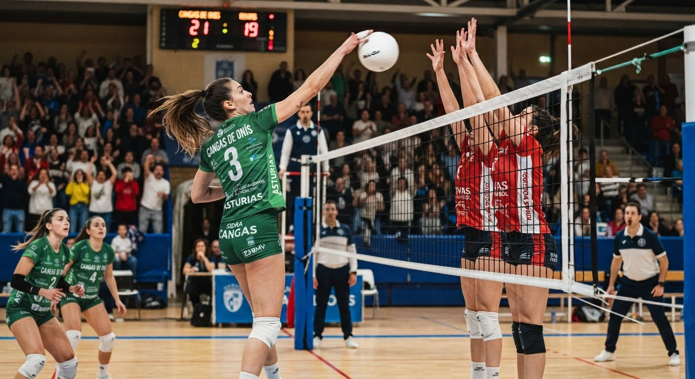

Oferta Deportiva Integral
Ofrecemos diferentes modalidades adaptadas a tus metas y necesidades físicas.
 Club Voleibol Cangas de Onís
Club Voleibol Cangas de Onís
Ofrecemos diferentes modalidades adaptadas a tus metas y necesidades físicas.
Ya sea que busques aprender las reglas básicas, mejorar tu técnica de saque o competir al más alto nivel, tenemos un grupo diseñado especialmente para ti.
